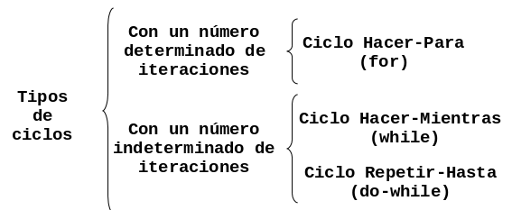

Estructuras Cíclicas
En este capítulo aprenderas a utilizar los 3 tipos de ciclos mas comunes:
- Ciclo
hacer-para - Ciclo
hacer-mientras - Ciclo
repetir-hasta
Clasificación
Se llaman problemas repetitivos o cíclicos a aquellos en cuya solución es necesario utilizar un mismo conjunto de acciones que se puedan ejecutar una cantidad especifica de veces.
Esta cantidad puede ser fija (previamente determinada por el programador) o puede ser variable (estar en función de algún dato dentro del programa). Los ciclos se clasifican como lo ilustra la siguiente figura:

Ciclo Hacer-Para
Los ciclos con un determinado número de iteraciones son aquellos en que el número de iteraciones se conoce antes de ejecutarse el ciclo. La forma de esta estructura es la siguiente:
Para variableControl = valorInicial hasta limite Hacer
Inicio-para
Accion1
Accion2
.
.
.
AccionN
Fin-paraDonde:
variableControllleva la cuenta de cuantas iteraciones se han realizado en todo momento.valorIniciales el valor desde donde empezará a contar la variable de control.limitees el valor que necesita alcanzar la variable de control para terminar el ciclo.
En este ciclo la variable de control toma el valor inicial del ciclo y el ciclo se repite hasta que la variable de control llegue al limite superior.
Problemas Hacer Para
- Calcular el promedio de un alumno que tiene 7 calificaciones en la
materia de Diseño Estructurado de Algoritmos
Inicio Sum =0 Leer Nom Hacer para c = 1 a 7 Leer calif Sum = sum + calif Fin-para prom = sum /7 Imprimir prom Fin. - Leer 10 números y obtener su cubo y su cuarta.
Inicio Hacer para n = 1 a 10 Leer num cubo = num * num * num cuarta = cubo * num Imprimir cubo, cuarta Fin-para Fin. - Leer 10 números e imprimir solamente los números positivos
Inicio Hacer para n = 1 a 10 Leer num Si num > 0 entonces Imprimir num fin-si Fin-para Fin. - Leer 20 números e imprimir cuantos son positivos, cuantos negativos y
cuantos neutros.
Inicio cn = 0 cp = 0 cneg = 0 Hacer para x = 1 a 20 Leer num Sin num = 0 entonces cn = cn + 1 si no Si num > 0 entonces cp = cp + 1 si no cneg = cneg + 1 Fin-si Fin-si Fin-para Imprimir cn, cp, cneg Fin. - Leer 15 números negativos, convertirlos a positivos e imprimirlos.
Inicio Hacer para x = 1 a 15 Leer num pos = num * -1 Imprimir num, pos Fin-para Fin. - Suponga que se tiene un conjunto de calificaciones de un grupo de 40
alumnos. Realizar un algoritmo para calcular la calificación media y la
calificación mas baja de todo el grupo.
Inicio sum = 0 baja = 9999 Hacer para a = 1 a 40 Leer calif sum = sum + calif Si calif < baja entonces baja = calif fin-si Fin-para media = sum / 2 Imprimir media, baja fin - Calcular e imprimir la tabla de multiplicar de un número cualquiera.
Imprimir el multiplicando, el multiplicador y el producto.
Inicio Leer num Hacer para X = 1 a 10 resul = num * x Imprimir num, " * ", X, " = ", resul Fin-para fin. - Simular el comportamiento de un reloj digital, imprimiendo la hora, minutos
y segundos de un día desde las 0:00:00 horas hasta las 23:59:59 horas
Inicio Hacer para h = 1 a 23 Hacer para m = 1 a 59 Hacer para s = 1 a 59 Imprimir h, m, s Fin-para Fin-para Fin-para fin.
Problemas Propuestos
-
Una persona debe realizar un muestreo con 50 personas para determinar el promedio de peso de los niños, jóvenes, adultos y viejos que existen en su zona habitacional. Se determinan las categorías con base en la sig, tabla:
Categoría Edad Niños 0 - 12 Jóvenes 13 - 29 Adultos 30 - 59 Viejos 60 en adelante - Al cerrar un expendio de naranjas, 15 clientes que aún no han pagado recibirán un 15% de descuento si compran más de 10 kilos. Determinar cuanto pagará cada cliente y cuanto percibirá la tienda por esas compras.
- En un centro de verificación de automóviles se desea saber el promedio de puntos contaminantes de los primeros 25 automóviles que lleguen. Asimismo se desea saber los puntos contaminantes del carro que menos contamino y del que más contamino.
-
Un entrenador le ha propuesto a un atleta recorrer una ruta de cinco kilómetros durante 10 días, para determinar si es apto para la prueba de 5 Kilómetros o debe buscar otra especialidad. Para considerarlo apto debe cumplir por lo menos una de las siguientes condiciones:
- Que en ninguna de las pruebas haga un tiempo mayor a 16 minutos.
- Que al menos en una de las pruebas realice un tiempo mayor a 16 minutos.
- Que su promedio de tiempos sea menor o igual a 15 minutos.
- Un Zoólogo pretende determinar el porcentaje de animales que hay en las siguientes tres categorías de edades: de 0 a 1 año, de mas de 1 año y menos de 3 y de 3 o mas años. El zoológico todavía no esta seguro del animal que va a estudiar. Si se decide por elefantes solo tomará una muestra de 20 de ellos; si se decide por las jirafas, tomara 15 muestras, y si son chimpancés tomara 40.
Ciclo Hacer-Mientras
Los ciclos con un número indeterminado de iteraciones son aquellos en que el
número de iteraciones no se conoce con exactitud, ya que esta dado en función de
un dato dentro del programa. Para este tipo de problemas se cuenta con dos
estructuras algorítmicas: el ciclo Hacer-mientras, y el ciclo Repetir-hasta.
El ciclo Hacer-Mientras es una estructura que repetirá un proceso "N" veces,
donde "N" puede ser fijo o variable. Para esto, la instrucción se vale de una
condición que es la que debe cumplirse para que se siga ejecutando. Cuando la
condición ya no se cumple, entonces ya no se ejecuta el proceso. La forma de
esta estructura es la siguiente:
hacer mientras <condicion>
inicio-mientras
<acciones-mientras>
fin-mientrasProblemas Hacer-Mientras
- Una compañía de seguros tiene contratados a n vendedores. Cada uno hace tres ventas a la semana. Su política de pagos es que un vendedor recibe un sueldo base, y un 10% extra por comisiones de sus ventas. El gerente de su compañía desea saber cuanto dinero obtendrá en la semana cada vendedor por concepto de comisiones por las tres ventas realizadas, y cuanto tomando en cuenta su sueldo base y sus comisiones.
- En una empresa se requiere calcular el salario semanal de cada uno de los n
obreros que laboran en ella. El salario se obtiene de la siguiente forma:
- Si el obrero trabaja 40 horas o menos se le paga $20 por hora.
- Si trabaja mas de 40 horas se le paga $20 por cada una de las primeras 40 horas y $25 por cada hora extra.
- Determinar cuantos hombres y cuantas mujeres se encuentran en un grupo de n personas, suponiendo que los datos son extraídos alumno por alumno.
-
El Departamento de Seguridad Publica y Transito del D. F . desea saber, de los n autos que entran a la ciudad de México, cuantos entran con calcomanía de cada color. Conociendo el ultimo dígito de la placa de cada automóvil se puede determinar el color de la calcomanía utilizando la siguiente relación:
Dígito Color 1 o 2 amarilla 3 o 4 rosa 5 o 6 roja 7 o 8 verde 9 o 0 azul - Obtener el promedio de calificaciones de un grupo de n alumnos.
- Una persona desea invertir su dinero en un banco, el cual le otorga un 2% de interés. ¿Cual será la cantidad de dinero que esta persona tendrá al cabo de un año si la ganancia de cada mes es reinvertida?.
- Calcular el promedio de edades de hombres, mujeres y de todo un grupo de alumnos.
- Encontrar el menor valor de un conjunto de n números dados.
- Encontrar el mayor valor de un conjunto de n números dados.
- En un supermercado un cajero captura los precios de los artículos que los clientes compran e indica a cada cliente cual es el monto de lo que deben pagar. Al final del día le indica a su supervisor cuanto fue lo que cobro en total a todos los clientes que pasaron por su caja.
- Cinco miembros de un club contra la obesidad desean saber cuanto han bajado o subido de peso desde la ultima vez que se reunieron. Para esto se debe realizar un ritual de pesaje en donde cada uno se pesa en diez básculas distintas para así tener el promedio mas exacto de su peso. Si existe diferencia positiva entre este promedio de peso y el peso de la ultima vez que se reunieron, significa que subieron de peso. Pero si la diferencia es negativa, significa que bajaron. Lo que el problema requiere es que por cada persona se imprima un letrero que diga: “SUBIO” o “BAJO” y la cantidad de kilos que subió o bajo de peso.
- Se desea obtener el promedio de g grupos que están en un mismo año escolar; siendo que cada grupo puede tener n alumnos que cada alumno puede llevar m materias y que en todas las materias se promedian tres calificaciones para obtener el promedio de la materia. Lo que se desea desplegar es el promedio de los grupos, el promedio de cada grupo y el promedio de cada alumno.
Ciclo Repetir-Hasta
El ciclo Repetir-Hasta es una estructura similar en algunas características, a
la anterior. Repite un proceso una cantidad de veces, pero a diferencia del
Hacer-Mientras, el Repetir-Hasta lo hace hasta que la condición se cumple y
no mientras, como en el Hacer-Mientras. Por otra parte, esta estructura
permite realizar el proceso cuando menos una vez, ya que la condición se evalúa
al final del proceso, mientras que en el Hacer-Mientras puede ser que nunca
llegue a entrar si la condición no se cumple desde un principio. La forma de
esta estructura es la siguiente:
Repetir
Accion1
Accion2
.
.
Accion N
Hasta <condicion>Problemas Repetir-Hasta
- En una tienda de descuento las personas que van a pagar el importe de su compra llegan a la caja y sacan una bolita de color, que les dirá que descuento tendrán sobre el total de su compra. Determinar la cantidad que pagará cada cliente desde que la tienda abre hasta que cierra. Se sabe que si el color de la bolita es roja el cliente obtendrá un 40% de descuento; si es amarilla un 25% y si es blanca no obtendrá descuento.
- En un supermercado una ama de casa pone en su carrito los artículos que va tomando de los estantes. La señora quiere asegurarse de no sobrepasar la cantidad de dinero que lleva, por lo que cada vez que toma un artículo anota su precio junto con la cantidad de artículos iguales que ha tomado y determina cuanto dinero gastará en ese artículo; a esto le suma lo que irá gastando en los demás artículos. Ayúdale a esta señora a no gastar más dinero del que lleva y obtener el total de sus compras y el cambio que recibirá.
-
Un teatro otorga descuentos según la edad del cliente. determinar la cantidad de dinero que el teatro deja de percibir por cada una de las categorías. Tomar en cuenta que los niños menores de 5 años no pueden entrar al teatro y que existe un precio único en los asientos. Los descuentos se hacen tomando en cuenta el siguiente cuadro:
Edad Descuento Categoría 1 de 5 - 14 35% Categoría 2 de 15 - 19 25% Categoría 3 de 20 - 45 10% Categoría 4 de 46 - 65 25% Categoría 5 de 66 en adelante 35%
Problemas Propuestos
-
La presión, volumen y temperatura de una masa de aire se relacionan por la formula:
masa = presion * volumen / (0.37 * (temperatura + 460))Calcular el promedio de masa de aire de los neumáticos de n vehículos que están en compostura en un servicio de alineación y balanceo. Los vehículos pueden ser motocicletas o automóviles.
- Determinar la cantidad semanal de dinero que recibirá cada uno de los n obreros de una empresa. Se sabe que cuando las horas de trabajo un obrero exceden de 40, el resto se convierte en horas extras que se pagan al doble de una hora normal, cuando no exceden de 8; cuando las horas extras exceden de 8 se pagan las primeras 8 al doble de lo que se paga por una hora normal y el resto al triple.
-
En una granja se requiere saber alguna información para determinar el precio de venta por cada kilo de huevo. Es importante determinar el promedio de calidad de las n gallinas que hay en la granja. La calidad de cada gallina se obtiene según la formula:
calidad = pesoGallina * alturaGallina / numeroHuevosFinalmente para fijar el precio del kilo de huevo, se toma como base la siguiente tabla:
Calidad Precio por kilo mayor o igual que 15 1.2 * promedio de calidad mayor que 8 y menor que 15 1.00 * promedio de calidad menor o igual que 8 0.80 * promedio de calidad - En la Cámara de Diputados se levanta una encuesta con todos los integrantes con el fin de determinar que porcentaje de los n diputados está a favor del Tratado de Libre Comercio, que porcentaje está en contra y que porcentaje se abstiene de opinar.
- Una persona que va de compras a la tienda "Enano, S.A.", decide llevar un control sobre lo que va comprando, para saber la cantidad de dinero que tendrá que pagar al llegar a la caja. La tienda tiene una promoción del 20% de descuento sobre aquellos artículos cuya etiqueta sea roja. Determinar la cantidad de dinero que esta persona deberá pagar.
- Un censador recopila ciertos datos aplicando encuestas para el último Censo Nacional de Población y Vivienda. Desea obtener de todas las personas que alcance a encuestar en un día, que porcentaje tiene estudios de primaria, secundaria, carrera técnica, estudios profesionales y estudios de postgrado.
- Un jefe de casilla desea determinar cuantas personas de cada una de las secciones que componen su zona asisten el día de las votaciones. Las secciones son: norte, sur y centro. También desea determinar cual es la sección con mayor numero de votantes.
- Un negocio de copias tiene un limite de producción diaria de 10,000 copias si el tipo de impresión es offset y de 50,000 si el tipo es estándar. Si hay una solicitud, el empleado tiene que verificar que las copias pendientes hasta el momento y las copias solicitadas no excedan del límite de producción. Si el límite de producción se excediera el trabajo solicitado no podría ser aceptado. El empleado necesita llevar un buen control de las copias solicitadas hasta el momento para decidir en forma rápida si los trabajos que se soliciten en el día se deben aceptar o no.
-
Calcular la suma siguiente:
100 + 98 + 96 + 94 + . . . + 0en ese orden - Leer n calificaciones de un grupo de alumnos. Calcule y escriba el porcentaje de reprobados. Tomando en cuenta que la calificación mínima aprobatoria es de 70.
- Leer por cada alumno de Diseño estructurado de algoritmos su numero de control y su calificación en cada una de las 5 unidades de la materia. Al final que escriba el número de control del alumno que obtuvo mayor promedio. Suponga que los alumnos tienen diferentes promedios.
- El profesor de una materia desea conocer la cantidad de sus alumnos que no tienen derecho al examen de nivelación. Diseñe un algoritmo que lea las calificaciones obtenidas en las 5 unidades por cada uno de los 40 alumnos y escriba la cantidad de ellos que no tienen derecho al examen de nivelación.
- Leer los 250,000 votos otorgados a los 3 candidatos a gobernador e imprimir el numero del candidato ganador y su cantidad de votos.
- Suponga que tiene usted una tienda y desea registrar las ventas en su computadora. Diseñe un algoritmo que lea por cada cliente, el monto total de su compra. Al final del día que escriba la cantidad total de ventas y el número de clientes atendidos.